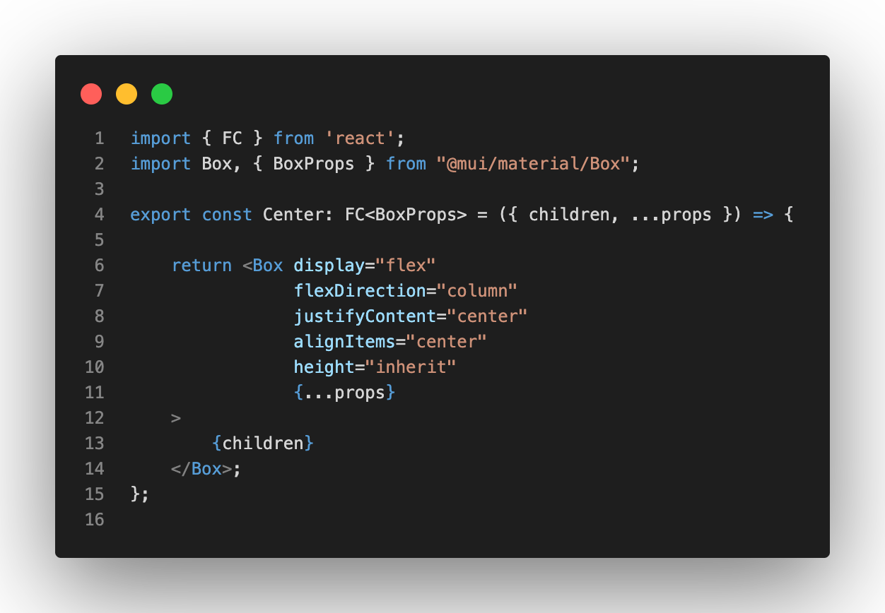
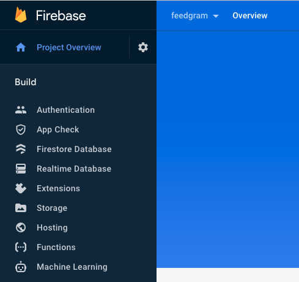
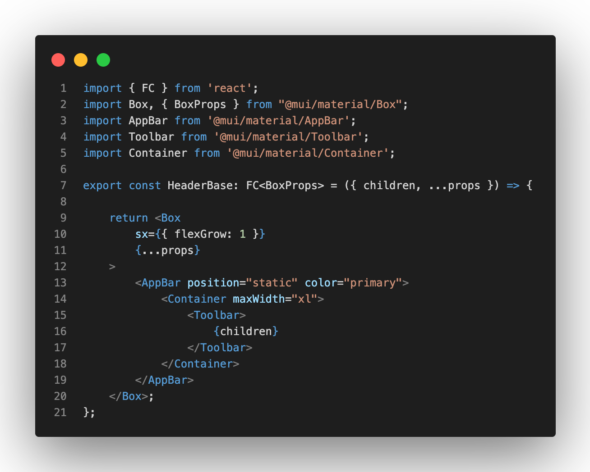
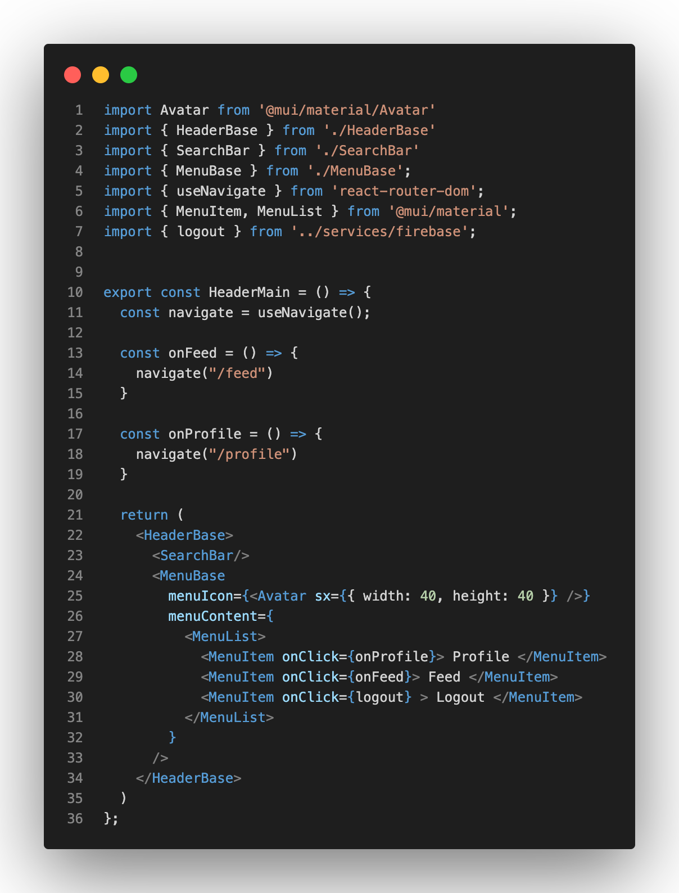
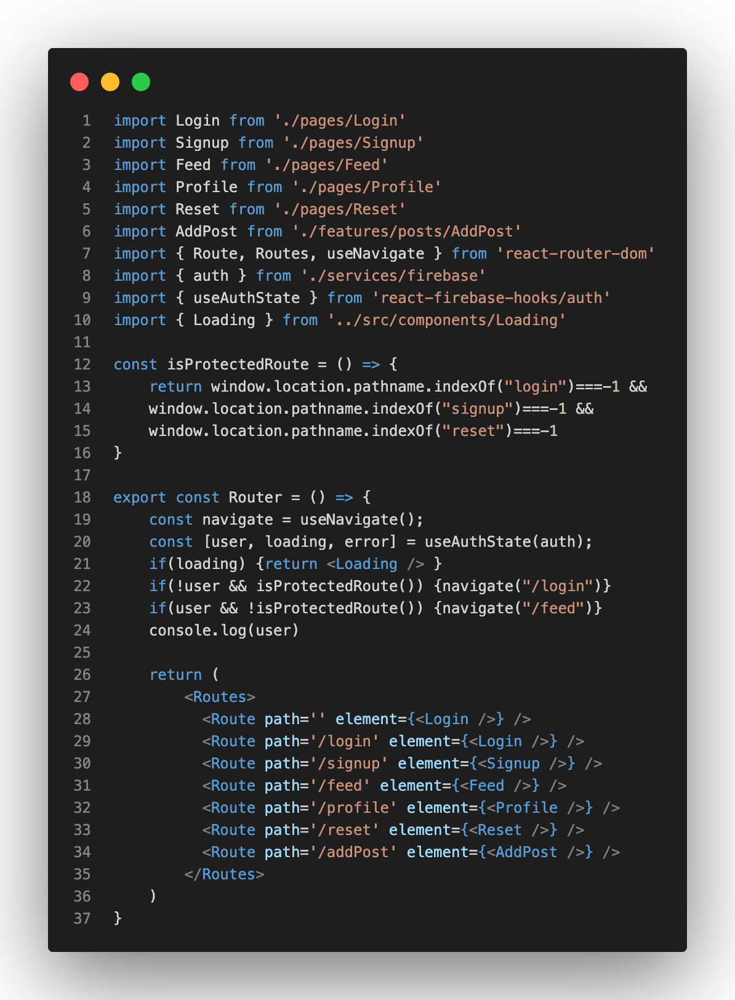
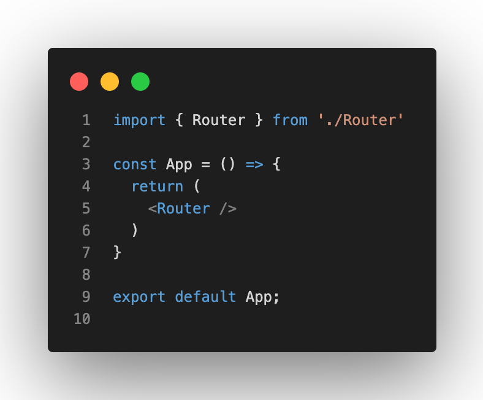
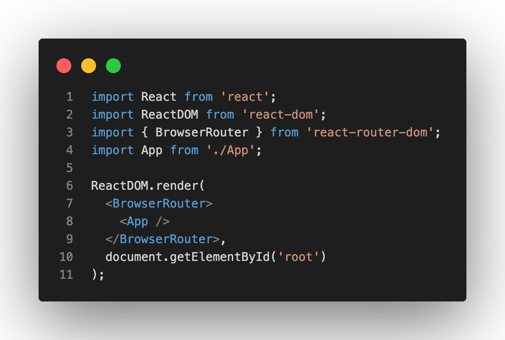
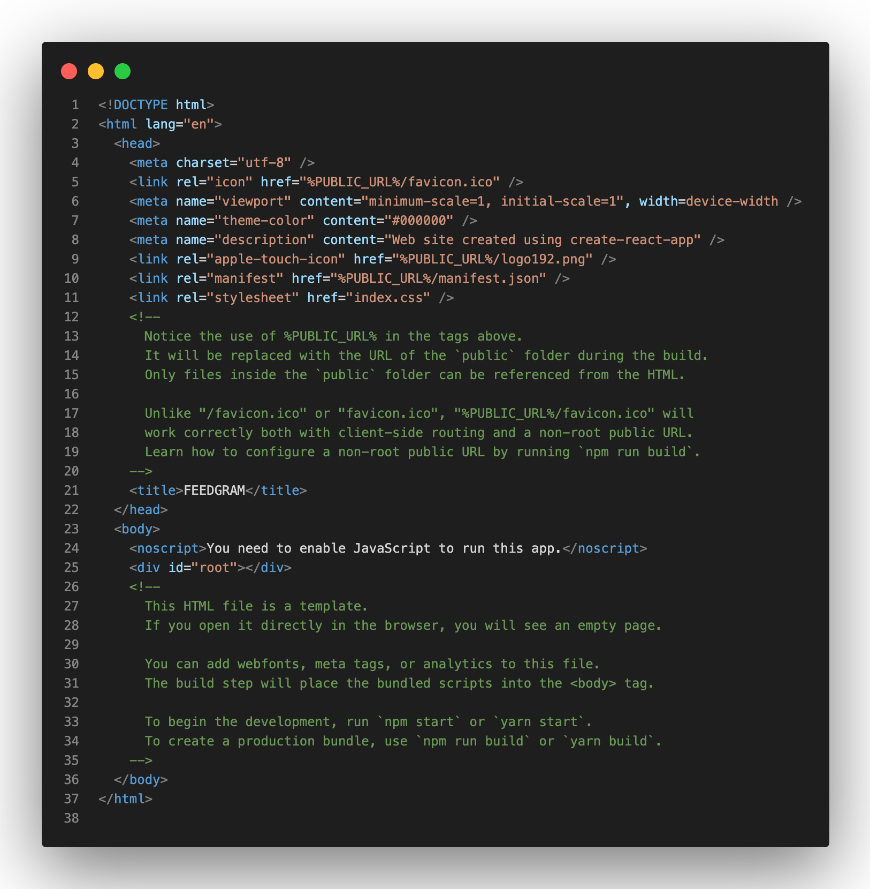
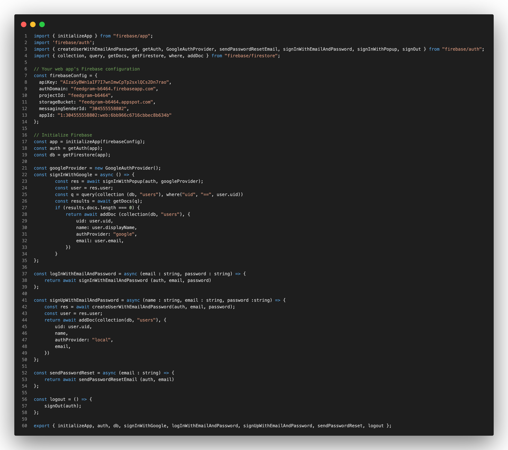
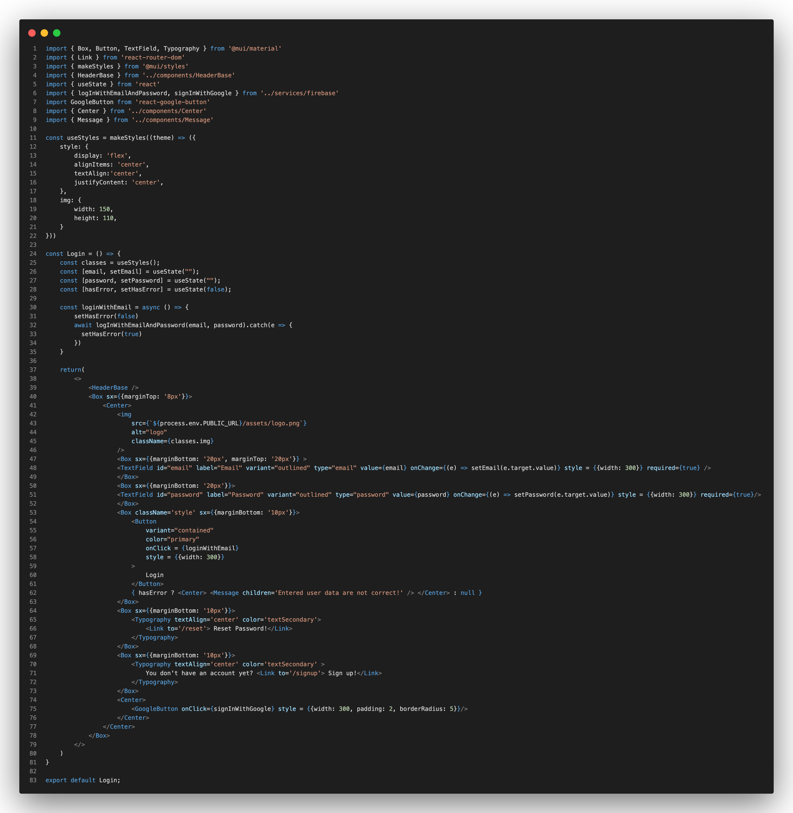

Aufgabenstellung
Mein Vertiefungsthema der Vorlesung dieses Semesters bezieht sich auf die Aufgabe meiner letzten Praxisphase, die ich aufgrund der Absetzung eines Projektes erhalten habe. Es geht dabei darum Instagram mit den Core-Features nachzubauen, um meine Skills im Development voranzutreiben. Dabei kamen verschiedene aktuelle Webtechnologien zum Einsatz, auf die ich in den folgenden Abschnitten genauer eingehen werde.
Verwendete Technologien
Der Instagramklon, den ich den ich Feedgram getauft habe, verwendet die folgenden Technologien:
- React
- TypeScript
- Node.js
- Node Package Manager (NPM)
- Firebase
- Material UI (MUI)
Im Folgenden werde ich die einzelnen Technologien genauer erläutern, bevor ich auf die Umsetzung meiner App zu sprechen komme.
React
React bezeichnet sich selbst als JavaScript Bibliothek. Es ist kostenlos und eine Open-Source-Software und ist auf die Frontendentwicklung spezialisiert. Wie in
Vorlesung 6 erläutert dient React zur Programmierung von Single Page Applications. In React wird das Konzept von SPA zum Beispiel durch
Components und
ReactDOM umgesetzt. React ist dabei
deklarativ, das heißt es werden Aussagen wie folgende formuliert:
"Ich hätte gerne dies oder das". React umfasst somit Funktionen die eher auf ein Framework hindeuten, bezeichnet sich jedoch selbst als Bibliothek.
Components oder Komponenten sind Codeblöcke, die React-Elemente erzeugen. Sie werden dabei generisch (generic) programmiert, damit sie wiederverwendet werden können und Redundanz im Code vermieden werden kann. Komponenten kann man über die funktionale Definition und die klassenbasierte Definition erzeugen. Bei der funktionalen Definition definiert man eine JavaScript-Methode, die im Return-Statement ein React-Element zurückgibt. Bei der klassenbasierten Definition wird eine JavaScript-Klasse geschrieben, die von React.Component über das Schlüsselwort extends erbt. Dabei muss zusätzlich eine render()-Funktion, die das React-Element ausgibt, definiert werden. Um die Klasse generisch zu gestalten, gibt es die sogenannten Properties (kurz: props). Diese Properties müssen bei einer funktionalen Definition immer mitgegeben werden. Ein Beispiel für eine funktionalen Definition sieht wie folgt aus:

Komponenten können wie Schleifen und Funktionen verschachtelt werden.
Die Idee hinter dem ReactDOM ist Zeit des Renderns zu minimieren. Wenn häufig Änderungen auf einer Seite vorgenommen werden müssen, kostet es jedes Mal sehr viel Zeit das gesamte DOM neu zu rendern. Um die Performance zu steigern, berechnet React in einem virtuellen DOM welche Bereiche neu gerendert werden müssen und gibt dann nutzt dann den effizientesten Weg, um nur die notwendigen Bereiche neu zu laden.
TypeScript
Auch Typescript wird immer beliebter und basiert auf dem ECMAScript-6-Standard beziehungsweise auf JavaScript. Die von Microsoft entwickelte Programmiersprache kann also auch als Superset von JavaScript bezeichnet werden. Somit funktioniert jeder JS-Code auch in TS, jedoch funktioniert TS-Code nicht (immer) in JS. Klassen, Objekte, Methoden und Ähnliches funktionieren wie in JavaScript. Den Vorteil den Entwickler durch Typescript genießen ist die Typsicherheit, die eine höhere Code-Qualität bietet. Die Typsicherheit ist dabei aus anderen Programmiersprachen wie zum Beispiel Java oder C# bekannt.
Node.js
Node.js ist in C, C++ und JavaScript geschrieben und ist eine Single-Thread, Open Source, plattformübergreifende Laufzeitumgebung. Es wird im Bezug auf Webanwendungen als Backened genutzt und bietet Schnelligkeit und hohe Skalierbarkeit.
Node Package Manager (NPM)
Node.js kann erweitert werden. Zum Beispiel wird der Node-Package-Manager(NPM) dazu verwendet Module, wie zum Beispiel Firebase als Datenbank, mit ihren Abhängigkeiten zu installieren, kompilieren, aktualisieren und/oder zu entfernen. Wichtige Befehle in der Commandozeile sind dabei:
- npm i packageName - um Pakte lokal zu installieren
- npm i -g packageName - um Pakete global zu installieren
- npm up - um Pakete zu updaten
- npm un packageName - um Pakete zu deinstallieren
- npm ls - um installierte Pakete/Module anzuzeigen
Die verwendeten / installierten Packages und Dependencies eines Projektes werden innerhalb des Projektes in einem Ordner namens node_modules abgelegt.
Firebase
Firebase ist eine Entwicklungs-Plattform von Google für mobile und Webanwendungen. Firebase stellt dabei verschiedene Tools bereit. Zum Beispiel gibt es ein Tool für die Authentication eines Nutzers. Dabei stellt Firebase verschiedene Authentication Methoden bereit wie zum Beispiel die Registrierung über Google, Twitter oder ganz klassisch eine Mail mit Passwort. Zudem stellt Firebase aber auch eine NoSQL Datenbank (Firestore Database) bereit, die es dem Entwickler ermöglicht über collections und documents Informationen zu speichern und in Echtzeit auszugeben.

Dabei ist es wichtig zu erwähnen, dass Firebase die Konsole und alle Informationen über ein User Interface (UI) bereitstellt und stark von anderen Datenbanken abweicht, da es keine direkte Entwicklungsumgebung und Abfragen für Datenbank gibt. Man muss somit mit den gegebenen Komponenten und Parameter der Datenbank arbeiten. Wie und Was in der Datenbank gespeichert werden soll wird direkt im JavaScript Code festgehalten. Dies ist möglich indem Firebase ein Software Development Kit (SDK) bereitstellt, welches es der Programmiersprache, z.B. JavaScript, ermöglicht das Projekt beziehungsweise die Datenbank von Firebase zu finden.
Firebase ist eine Datenbank die sich meiner Meinung nach sehr gut für mobile Anwendungen und Webapplikationen eignet, da sie sich leicht implementieren lässt und alle Bedürfnisse für eine nicht allzu komplizierte Anwendung bereitstellt. Klar sollte dabei aber auch sein, dass Firebase nicht für die Nutzungen in großen Konzernen geeignet ist.
Material UI (MUI)
Material UI ist eine User Interface Bibliothek für React die auf den Material Design, die Designsprache von Google, basiert. Sie stellt Looks und Designs für zum Beispiel Button, Header, Menus oder auch für Schriftarten und Inhalte bereit. Diese haben dabei einen modernes Design, was sich darin bestätigt, dass die Bibliothek für große Webanwendungen wie Twitter benutzt wird. Material UI stellt die verschiedenen Designs in Komponenten bereit. Dies bringt den Vorteil mit sich, dass die Design individuell angepasst werden können. Der zweite Vorteil ist, wie ich beim Thema React erklärt habe, die Komponenten genersich sind. Somit muss zum Beispiel ein Button nur einmal in einer Komponente erstellt und angepasst werden und kann daraufhin beliebig oft wiederverwendet werden.
Umsetzung der App
Wie in der Theorie zu dieser App beschrieben verwendet Feedgram verschiedene Technologien. Zuästzlich zu den oben genannten Technologien habe ich VSCode als Code-Editor benutzt und GitHub zur Verwaltung meine Projektes, da GitHub mir die Möglichkeit bietet in verschiedenen Branches zu arbeiten und somit verschiedene Entwicklungsprozesse sauber zu trennen und auf verschiedene Versionen der Applikation zurückgreifen zu können.
Doch nun zur wirklichen Umsetzung des Projektes. Begonnen habe ich damit indem ich ein blankes React-TypeScript über den NPM-Befehl npx create-react-app my-own-app --template typescript erstellt habe. my-own-app ist dabei der Titel meines Projektes. Node stellt mir durch diesen Command ein React-TypeScript-Projekt bereit, welches sich sofort ausführen lässt. Somit sind alle Voraussetzungen getroffen und die eigentliche Arbeit kann beginnen. Dazu habe ich, wie im Kapitel von NPM erklärt, die benötigten Packages installiert.Dazu gehören React, Firebase, TypeScript und MUI.
Da dieses Projekt über zwei Monate ging, kann ich nicht auf jeden einzelnen Schritt des Entwicklungsprozesses eingehen und werde nur einzelne Punkte aus der Anwendung vorstellen.
Komponenten
Beginnen wir mit dem Coding in React. Dazu stelle ich einmal das Konzept der wiederverwendbaren Komponenten vor und das Routing durch die App mit nur einer HTML-Seite (SPA). Dazu schauen wir uns die Datei HeaderBase.tsx an. Die .tsx-Endung symbolisiert dabei, dass es sich um eine React-TypeScript Datei handelt.

Blicken wir zunächst auf die Imports. Wie beschrieben verwende ich hierbei vorgefertigte Teile aus MUI. Dabei erstelle ich die const> namens HeaderBase die exportiert werden soll, damit ich sie an verschiedenen Stellen meines Projektes verwenden kann. Die Funktion, die FC = Functional Component erhält die Properties vom Typ Box, die aus der MUI-Library entnommen habe. Darauf werden children, ...props festgelegt. Sie dienen als Platzhalter, damit an diesen Stellen die Komponente erweitert werden kann, falls dies notwendig ist. Im Return-Statement der Funktion gebe ich dann die verschiedenen graphischen Inhalte zurück die auf der Seite gezeigt werden sollen. Dabei verwenden wir zunächst die MUI-Box, die als Kasten fungiert und die Properties erhält. Somit kann die Box, zum Beispiel die Größe oder Sichtbarkeit des gesamten Headers angepasst werden. Danach folgt verschachtelt die AppBar. Dies gibt die Position und Farbe des Header mit. Im Container wird dann mit maxWidth="xl" die maximale Bildschirmgröße die der Header erfüllen kann festgelegt. Dadurch dass die Box flex ist, ist der Header dann je nach Display-Größe unterschiedlich groß. In dem Container finden wir dann die Toolbar, innerhalb dieser stehen die sogenannten children. Die Children fungieren dabei als Platzhalter. Somit kann die Toolbar durch weitere Komponenten mit Inhalt gefüllt werden. Genau dies tun wir in der Datei HeaderMain.tsx, denn dort fügen wir eine Suchleiste und Avatar-Icon in unseren Header hinzu:

Wie sich hier erkennen lässt, nutzen wir die generische Komponente HeaderBase als Rahmen und fügen zwei weitere Komponenten, namens SearchBar und MenuBase, in die HeaderBase-Komponente ein. Somit erzugen wir die HeaderMain-Komponente in dem wir drei einzelne Komponenten miteinander vereinen. Dabei lässt sich auch ein Vorteil erkennen, denn wir separieren den Code und die Funktionen der einzlnen Komponenten von einander und führen sie in einer weiteren Komponenten nur durch ihren Aufruf zusammen. Somit können wir hier von Clean-Code sprechen, denn wir schaffen nachvollziehbaren Code, der voneinander getrennt ist und durch die klare Namensgebung weiß man, wo man die Funktionen für die einzelnen Bestandteile findet. Falls man also eine Veränderung an der Suchleiste vornehmen möchte, weiß man direkt, dass die Anlaufstelle die SearchBar.tsx-Datei ist.
Routing
Schauen wir uns nun das Routing von der SPA an und wie die verschiedenen Inhalte geladen werden könnnen. Dazu müssen wir ein Blick auf die folgenden Dateien werfen:
- Router.tsx
- App.tsx
- index.tsx
- index.html
Beginnen wir nun also auch in dieser Reihenfolge und betrachten zunächst die Router.tsx-Datei:

Dabei importieren wir zunächst wieder all unsere benötigten Seiten und Komponenten. Auf den Authenzifizerungsprozess werde ich dabei später nochmal genauer eingehen. Zunächst legen wir fest, was eine geschützte Route ist und was keine geschützte Route ist. Somit separieren wir die Seiten in Seiten, die nur als angemeldeter Nutzer zugänglich sind, und in Seiten, wie Login, Registrierung und Passwort-Zurücksetzen, die ohne angemeldeten Nutzer zugänglich sein sollten. Im Return-Statement legen wir dann fest, welche Seite bei welchem URL-Path aufgerufen werden soll. Somit wird bei /feed zum Beispiel die Feed-Seite der App geladen, wenn ein Nutzer angemeldet ist.

Die App.tsx-Datei, die mit dem Erstellen des Projektes geliefert wird gibt dann im Return-Statement den Router zurück.

Das gleich funktioniert bei der index.tsx-Datei diese gibt dann innerhlab des BrowserRouters, der aus dem React-Router-DOM Package stammt, die App.tsx zurück, welche den Router beinhaltet.

Die HTML-Datei enthält im Body ein div mit der ID root. Wie die index.tsx-Datei zeigt sucht die durch den Aufruf document.getElementByID('root') nach der ID, die das div hat. Somit können durch die Definition des Routings in Router.tsx die jeweiligen Seiten über die App.tsx und index.tsx in das HTML-DIV in index.html geladen werden, sodass je nach Nutzer-Aktion immer zur richtigen Seite navigiert und der richtige Inhalt gezeigt wird.
Login & Registrierung via Firebase
Um Firebase mit React nutzen zu können, müssen wie bereits erwähnt das Package und die Dependencies in das Projekt via NPM geladen werden. Nachdem dieser Schritt abgeschlossen ist, muss ein neues Projekt in Firebase angelegt werden und dann kann dieses in die React-App eingebunden werden. Das Erstellen einer Firebasedatenbank für eine Webanwendungen ist dabei sehr intuitiv, weshalb ich darauf nicht genauer eingehen werde. Viel bedeutender ist es, dass Firebase über einen ApiKey, eine AuthDomain und verschiedene IDs die Verbindung zur Webanwendung ermöglicht. Diese Informationen müssen der Anwendung bekannt sein, damit sie die richtige Firebasedatenbank findet. Der Code für Feedgram sieht dabei so aus:

Die Datei firebase.ts gibt in der const firebaseConfig die genannten Informationen mit, damit die Datenbank eindeutig indentifiziert werden kann. Daraufhin wird sie initialisiert und stellt somit die Authentication und das Speichern der Beiträge von verschiedenen Nutzer, damit diese später im Feed angezeigt werden, bereit. Folglich werden weitere Funktionen definiert, die das Login und die Registrierung mit Email oder Google-Account, das Passwort-Zurücksetzen und das Ausloggen ermöglichen. Um diese Funktionen zu verwenden werden sie dann ein Element, zum Beispiel einen Login Button, zugewiesen, das die Funktion aufruft und somit ein Login zulässt oder verweigert:

In login.tsx wird die Funktion loginWithEmailAndPassword in Zeile 30 an die initialisierte Funktion loginWithEmail übergeben, die durch den Button, siehe Zeile 54, aufgerufen wird. Diese setzt HasError auf false und springt dann in die loginWithEmailAndPassword-Funktion und überprüft, ob ein Nutzer mit den angegebenen Daten in der Datenbank hinterlegt ist. Falls dies der Fall ist, wird der Nutzer angemeldet und gelangt zum Feed, falls dies jedoch nicht der Fall ist und die eingegebenen Informationen falsch sind, wird HasError durch catch(e => setHasError(true)) auf true gesetzt, somit wird der Nutzer nicht angemeldet und die Error-Message in Zeile 62 wird angezeigt.
Die fertige Webanwendungen
Nun zur fertigen Applikation. Wie sieht die Anwendung nun konkret aus? Dazu folgen nur ein paar Bilder des User-Interfaces. Falls Fragen zur Umsetzung oder Funktionalität bestehen, wenden Sie sich an
Tom Baier oder besuchen Sie mein
Github Projekt.